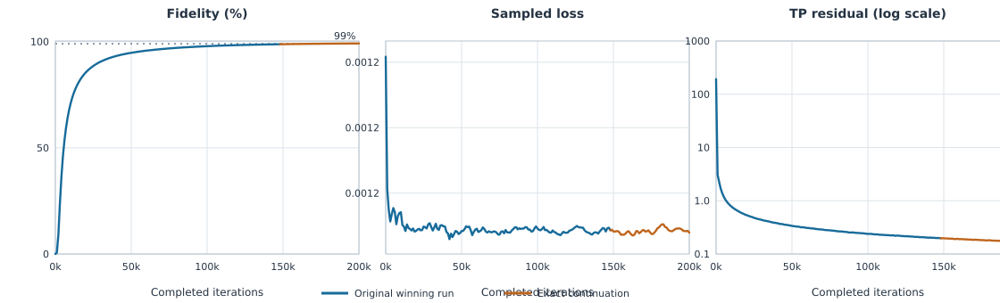
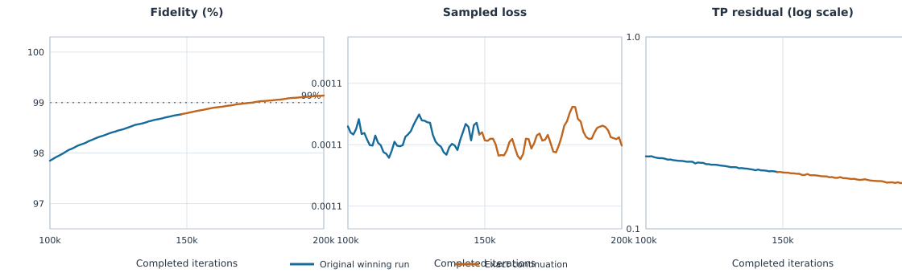

| Checkpoint | Fidelity | Sampled loss | TP residual |
|---|---|---|---|
| Parent, 148,000 | 98.76891% | 0.0011358295 | 0.1976805 |
| Continuation, 200,000 | 99.13929% | 0.00113493693 | 0.1706184 |
Answer to the experiment question. More iterations alone were sufficient for this trajectory to cross 99%. Every saved checkpoint from 191,000 through 200,000 also remained above 99%, so the endpoint is not a lone saved-threshold excursion.
From 148,000 to 200,000 steps, factor fidelity improves by 0.3704 percentage points, the fixed-sample loss changes from 0.0011358295 to 0.00113493693, and the complete-factor TP residual improves from 0.1976805 to 0.1706184. TP is reported separately; fidelity is not a physical-feasibility certificate.
This is one exact restart, not a new sweep. It preserves the parent factor, momentum estimate, PCG64 sampling state, global schedule index, dataset, source snapshot and all optimizer settings. The segment adds 52,000 updates and 3,407,872,000 optimizer-row draws, ending at 13,107,200,000 total draws.

Fidelity is |c†u|²/(||c||²||u||²), computed from complete factors and invariant to nonzero phase/scale. Sampled measurement loss uses the fixed 512-row metric sample with seed 12345. TP is ||T(uu†)−I||F from the complete factor and is plotted logarithmically. The dotted line is the 99% reference.

| Saved step | Fidelity | Sampled loss | TP residual |
|---|---|---|---|
| 191,000 | 99.10148% | 0.00113636912 | 0.1734496 |
| 192,000 | 99.10645% | 0.00113646555 | 0.1747628 |
| 193,000 | 99.11019% | 0.00113655213 | 0.1731092 |
| 194,000 | 99.11469% | 0.00113644414 | 0.1735892 |
| 195,000 | 99.11820% | 0.00113618074 | 0.1740994 |
| 196,000 | 99.12464% | 0.00113561092 | 0.17316 |
| 197,000 | 99.12849% | 0.00113553702 | 0.1722434 |
| 198,000 | 99.13288% | 0.00113545259 | 0.1711749 |
| 199,000 | 99.13407% | 0.00113560469 | 0.170114 |
| 200,000 | 99.13929% | 0.00113493693 | 0.1706184 |
First saved F≥99%: 174,000 steps.
All saved checkpoints 191,000–200,000 ≥99%: yes.
The prior descriptive projection suggested a crossing near 170–175k; the observed saved crossing is 174k. This agreement does not turn the earlier fit into a confidence interval or validate extrapolation to other seeds.
The TP residual continues improving, from 0.1976805 at restart to 0.1706184 at the endpoint.
| Quantity | Exact value |
|---|---|
| Step size γₖ | min(1, 0.5/(k+10)3/4) |
| Smoothing βₖ | 107/(k+1)1/4; no cap |
| Momentum ρₖ | min(1, 0.6/(k+4)1/2) |
| Segment / total steps | 148,000→200,000 / 200,000 |
| Batch / rank / τ / precision | 65,536 / 1 / 20 / 64-bit |
| Backend / prefetch / metric | product-state / yes / sampled 512 rows every 1,000 |
| Seeds | channel, noise, initialization, sampling: 0; metric: 12345 |
| Timer | Measured value | Scope |
|---|---|---|
| Slurm elapsed | 12 min 17 s | Whole allocation; COMPLETED, exit 0:0 |
| Runner | 705.106 s (11.75 min) | Continuation runner after setup |
| Optimizer | 403.873 s (6.73 min) | 52,000 GPU updates |
| Host preparation | 346.519 s | Overlapped background time |
| Metric evaluation | 2.358 s | Saved-checkpoint metrics |
Definitions. Runner time begins after setup and includes compilation, host preparation, transfers, metrics and rolling restart checkpointing. Optimizer time measures GPU update execution. Host preparation accumulates background preparation time and overlaps GPU work under prefetch, so these phase timers must not be added as disjoint totals. Slurm elapsed time is the whole allocation.
Virtual dataset M=24⁸=110,075,314,176 rows, sampled uniformly with replacement and never materialized. The noisy-truth expectation σ²/2=0.00125 is not a measured convergence floor. No fidelity early stopping was used.
| Check | Result |
|---|---|
| Scheduler | COMPLETED on ruche-gpu15; exit 0:0 |
| Restart continuity | The resumed step-148000 factor hash and initial fidelity/loss/TP match the parent endpoint. |
| Exact schedules | All 52,000 applied scalar values match the frozen exponents, scales, offsets and caps. |
| Final step | 200,000; exactly 52,000 additional updates |
| Independent full-factor result | verified; primary ≥99% target met |
| Final-ten persistence | all saved checkpoints 191,000–200,000 ≥99% |
The independent verifier recomputed fidelity and TP from the complete saved factor using NumPy-only contractions. Saved fidelity 0.9913929063754052 agrees with independently computed 0.9913929063754066 (matrix form 0.9913929063754067); saved TP 0.1706183674269944 agrees with independently computed 0.1706183674269938. Truth TP residual is 4.91e-14.
This is one Haar-unitary channel, one fixed noisy dataset, one initialization and one optimizer sampling seed. It answers the bounded continuation question for this trajectory only; it does not establish a success probability, uncertainty interval, universal scale optimum, or physical-feasibility certificate.
Backup integrity. All 11 copied files matched Ruche byte-for-byte by SHA-256 at collection. The wrapper’s internal manifest matches every scientific artifact. Its Slurm stdout entry records the empty-file hash because the wrapper computed checksums before Slurm appended the final COMPLETE line; the finalized stdout was separately matched between Ruche and Elite and the preserved manifest was not rewritten.
Frozen scientific source: /gpfs/workdir/silvetian/frankwolfe/results/qpt/n8_scale_tuning_20260923_01/source_fast
Final archive SHA-256: 6521b319b0e1cc68bb058c8be5e653b8aeac6bba35d724a2b588674681e89987
Resumed factor SHA-256: fe2d5c002927690e6cdbc3501d0d38b73a1f628ecefc2dcf89ce96c07135589e